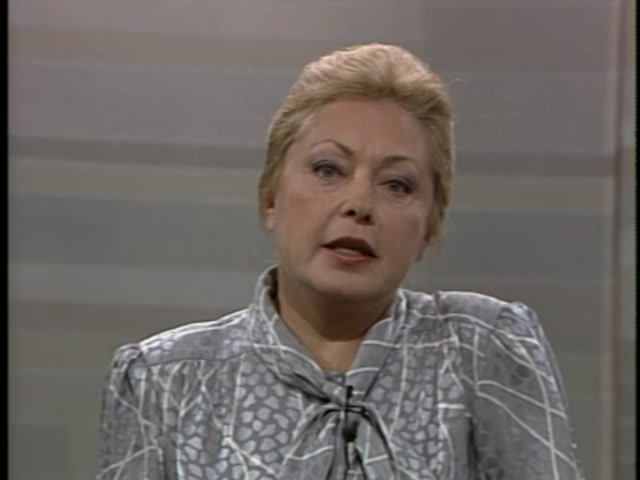
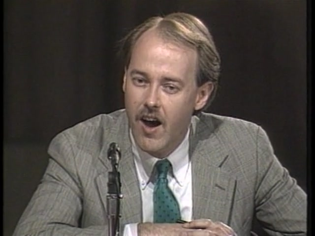
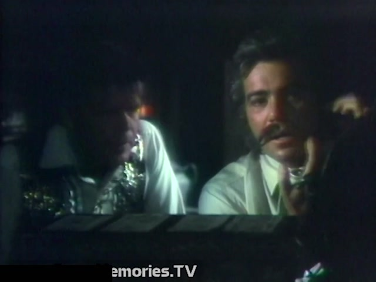
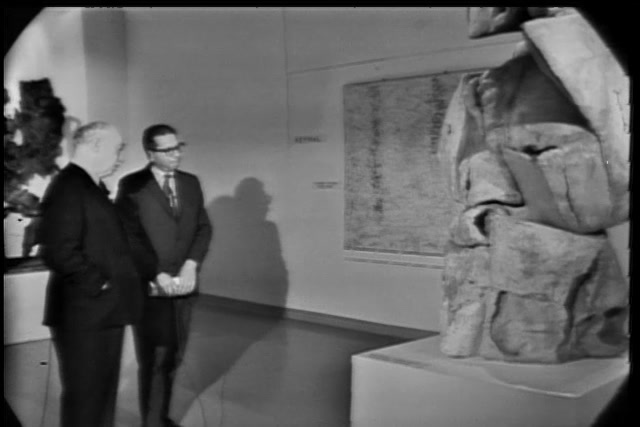
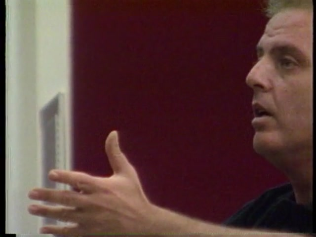
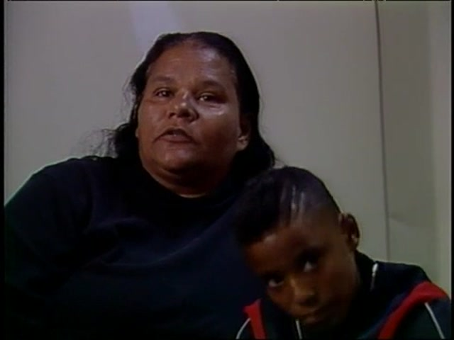

A Cross-Modal QA Benchmark for Archival Broadcast Video Understanding
The CLAMS-Agent Benchmark is a cross-modal question-answering dataset built over archival broadcast video content from the American Archive of Public Broadcasting (AAPB). Questions are designed to require combining information from multiple modalities — speech transcripts, on-screen text, visual content, named entities, and speaker identification — to answer correctly.
The dataset is constructed by an automated pipeline that orchestrates specialized open-source tools through the CLAMS (Computational Linguistics Applications for Multimedia Services) platform, producing hierarchical structured video indexes. Questions are generated by an LLM using structured multi-modal evidence, then split into three evaluation tracks: multiple-choice, free-text, and visual-grounded.
108 videos totaling 80.3 hours, drawn from 5 AAPB collections representing diverse broadcast content types:
| Collection | Videos | Content Type | Era | Source |
|---|---|---|---|---|
| NewsHour | 46 | PBS national news broadcast | 1975–2005 | WETA/WGBH |
| Peabody | 23 | Award-winning broadcasts (documentary, public affairs, cultural) | 1960s–1990s | Peabody Awards Collection |
| FuzzyMemories | 18 | Chicago local TV recordings (news, commercials, shows) | 1966–1985 | FuzzyMemories.TV archive |
| IMLS | 8 | Mixed AAPB content (educational, public affairs) | 1960s–1990s | IMLS-funded digitization |
| NJN Network | 7 | New Jersey Network regional broadcasts | 1960s–1990s | NJN/NJTV |
| Other AAPB | 6 | Hawaiian public broadcasting, other regional | Various | AAPB |
Each video is processed through a 7-stage pipeline of specialized open-source models, followed by post-processing for NER, entity resolution, relation extraction, and knowledge grounding.
app-swt-detection v8.3app-parakeet-wrapper v1.0 with parakeet-tdt-0.6b-v2app-transnet-wrapper with TransNetV2app-qwen3vl-captioner with Qwen2.5-VL-3B-Instructapp-qwen3vl-captioner with Qwen2.5-VL-3B-Instructscripts/merge_mmif_views.pyNeMo ClusteringDiarizer (MarbleNet VAD + TitaNet embeddings)spaCy en_core_web_smresolve_entity_variants()| Component | Details |
|---|---|
| Server | aristotle.cs.brandeis.edu — 4× NVIDIA RTX A6000 (48GB each) |
| Container runtime | Podman (rootless containers) |
| CLAMS apps | Container images from ghcr.io/clamsproject/ |
| LLM inference | Ollama (qwen3:8b) and vLLM (Qwen3.5-9B, Qwen3-VL-8B-Instruct) |
| Embeddings | nomic-embed-text via Ollama (768-dim, for ChromaDB semantic search) |
| Output format | MMIF (Multi-Media Interchange Format) — JSON-LD annotation interchange |
Each video produces a JSON index file containing timestamped segments with multi-modal annotations.
{
"segment_id": "cpb-aacip-507-154dn40c26_130196_158858",
"start_ms": 130196,
"end_ms": 158858,
"scene_label": "Neg",
"asr_transcript": "that is fast becoming this country's number one health concern...",
"visual_caption": "A man in a suit sits at a news desk with a monitor behind him...",
"ocr_text": "AIDS: FACT AND FICTION",
"named_entities": [
{"text": "Dr. Mathilde Krim", "type": "PERSON"},
{"text": "AIDS Medical Foundation", "type": "ORG"}
],
"relations": [
["AIDS researcher", "separate", "fact from fiction"],
["AIDS victims", "isolate from", "society"]
],
"grounded_entities": {
"Dr. Mathilde Krim": "American geneticist and public health advocate (1926-2018). Co-founder of amfAR...",
"AIDS Medical Foundation": "Predecessor to amfAR, founded 1983..."
},
"primary_speaker": "speaker_7"
}

ASR: "Well, this is a very puzzling situation in this country and in Europe. You're right. In Africa, AIDS is a venereal disease which attacks men and women in equal numbers..."
OCR: "MATHILDE KRIM, PHD. AIDS Medical Foundation"
Entities: Europe (LOC), South Africa (LOC), the late 70s (DATE)
Relations: AIDS virus → bring into → country; gay male community → close from → standpoint of sexual interactions

ASR: "...of what many people don't expect to be a problem with censorship, but rather students with conservative viewpoints as opposed to liberal viewpoints who are being censored in their student publications..."
OCR: "Mark Goodman, EXECUTIVE DIRECTOR, STUDENT PRESS LAW CENTER"
Entities: the Student Press Law Center (ORG), the Dartmouth Review (ORG), Mark Goodman (PERSON)

ASR: "Of course it was Vancouver. We already knew that. What better place to pass counterfeit money than a bank?"
Visual: Dark nighttime scene with "Guest Stars PAT HINGLE as Emory Van Cleve" displayed in yellow and white text.
Entities: Vancouver (GPE), Pat Hingle (PERSON), Emory Van Cleve (PERSON)
Grounded: Vancouver: "largest city in the province of British Columbia, Canada"

ASR: "...it shows a certain resemblance to other experiments earlier than the Lipschitz we saw where he had these transparencies and the open areas are contrasted with the volume forms..."
Visual: Close-up of a mechanical arm with a claw-like end, set against a rocky outdoor background.
Entities: Lipschitz (PERSON), César (ORG), Vokas (PERSON), John Mason (ORG)

ASR: "Civic Orchestra is the training orchestra of the Chicago Symphony. Almost a quarter of today's CSO musicians started with Civic."
Visual: A conductor in a white shirt standing at a podium with his right hand raised, conducting an orchestra.
Entities: Civic Orchestra (ORG), the Chicago Symphony Orchestra (ORG), CSO (ORG), Europe (LOC)

ASR: "I can ask him once or twice at the most to do something for me. And usually it was his homework. It took me three hours to get him to sit down and do his homework because James was going to do it when he got ready."
Entities: James (PERSON), January (DATE), Haroldine Haley (PERSON)
ASR: "...these people haven't yet been confirmed by the Senate. I accept every one of them at face value. I think we have to say the president-elect has a right to choose anyone he want..."
OCR: "UNITED STATES OF AMERICA"
Entities: Senate (ORG), Linda Chavez (PERSON), Gail Norton (PERSON), John Ashcroft (PERSON), Ronnie White (PERSON)
| Field | Segments with Data | Coverage | Meaning |
|---|---|---|---|
| ASR transcript | 22,078 | 83% | Percentage of segments that have any speech content. The 17% without ASR are typically non-speech segments: opening slates, test patterns, music-only moments, or visual transitions. |
| Visual captions | 26,132 | 98% | Percentage of segments with a VLM-generated description of what the frame shows. Nearly universal because Qwen captions every 5 seconds. The 2% gap is segments too short for frame extraction. |
| OCR text | 1,008 | 4% | Percentage of segments with dedicated OCR text extraction. Low because OCR only runs on SWT-detected text scenes (slates, chyrons, credits) — not on regular shots. On-screen text in other segments is captured in visual captions instead. |
| Named entities | 18,884 | 71% | Percentage of segments where spaCy found at least one named entity (person, organization, location, etc.). Segments without entities typically contain generic speech with no proper nouns. |
| Relations | 16,022 | 60% | Percentage of segments with extracted SVO triples (subject-verb-object from dependency parsing). Requires sufficiently complex sentences to produce meaningful triples. |
| Grounded entities | 11,539 | 43% | Percentage of segments where at least one entity was successfully linked to Wikidata or Wikipedia. Entities that fail to resolve include misspellings, obscure local figures, and generic terms. |
| Track | Questions | Format | Scoring |
|---|---|---|---|
| Multiple Choice | 521 | 4-way MC with adversarially filtered distractors | Exact match accuracy |
| Free-Text | 350 | Open-ended answer with reference | LLM-as-judge (Video-ChatGPT protocol, 5 dimensions: correctness, completeness, relevance, cross-modal reasoning, specificity, each 0–5) |
| Visual-Grounded | 205 | Frame image + ASR transcript required | LLM-as-judge |
Questions are generated by prompting qwen3:8b (via Ollama) with structured multi-modal evidence from the video index. The system prompt defines 4 cross-modal patterns:
| Pattern | Questions | % | Example |
|---|---|---|---|
| ASR + chyron (name/title) | 191 | 28% | "What organization does the speaker represent according to the on-screen title?" |
| ASR + b-roll footage | 131 | 19% | "What was shown on screen while the reporter described the advance?" |
| ASR + on-screen graphic | 104 | 15% | "What data is displayed in the chart during the healthcare discussion?" |
| ASR + speaker identification | 67 | 10% | "What position did the person identified as 'Anti-AIDS Citizens Group' take?" |
| Entity knowledge + content | 15 | 2% | "Given the speaker's Wikidata description, how does their background relate?" |
| Other cross-modal | 176 | 26% | Various combinations of modalities |
Each question includes grounding metadata with verbatim excerpts from the source evidence:
{
"grounding": {
"speech_excerpt": "Dr. Krim discussed the latest research findings...",
"visual_reference": "A chyron reads 'DR. MATHILDE KRIM, AIDS Medical Foundation'",
"ocr_reference": "AIDS MEDICAL FOUNDATION",
"reasoning": "The chyron identifies her organization while the speech provides her argument"
},
"source_segment_times": [{"start_ms": 130196, "end_ms": 158858}]
}
Grounding is verified against the index: 99% of questions have locatable evidence, 88% have verified speech excerpts, 65% have verified visual references.
Inspired by CinePile, INQUIRER, and AutoConverter:
205 questions across 72 videos requiring actual frame images to answer. The model sees the extracted frame + ASR transcript but NOT the visual caption (which was used only for question generation).
| Visual Category | Questions | Description |
|---|---|---|
| Graphic | 104 | Charts, data tables, diagrams, numbers on screen |
| B-roll | 62 | Action footage, outdoor scenes, crowds, buildings |
| Map | 34 | Geographic displays, globe graphics, highlighted regions |
| Headline | 5 | On-screen news banners, breaking news text |
All 205 frames extracted successfully at segment midpoints via ffmpeg.
Q: What role does the on-screen text 'Roger Rosenblatt' play in relation to the speech content?
Grounding: Speech: "phrase, body of work. Unlike the body you were born with, this one is put together by oneself..." | OCR: "Roger Rosenblatt" | Requires both modalities: OCR identifies WHO, speech reveals WHAT they said.
Q: How does the serene landscape painting in the second segment relate to the speaker's question about using the gift of observation in daily life?
Grounding: Speech: "How do we put that gift to use as we look at the sights around us in our daily lives?" | Visual: "A serene landscape painting featuring a lone tree on a rocky outcrop with people in the foreground" | Requires understanding what the painting shows AND what the speaker is asking.
Q: What organization does Dr. Jonathan Mann represent according to the on-screen text and his speech?
Reference answer: Dr. Jonathan Mann represents the World Health Organization (WHO).
Grounding: Speech: "there have been a total of over 51,000 cases of AIDS reported officially to the World Health Organization..." | Visual: chyron reads "DR. JONATHAN MANN, World Health Organization" | The chyron names his affiliation; the speech confirms his role in reporting global AIDS statistics.
Q: What is the relationship between the named entity 'DEP' and Seba Geigi according to the speech?
Reference answer: The DEP has been permissive with Seba Geigi, as indicated by the speech.
Grounding: Speech: "I would say that the DEP has been permissive with Sebogyga. Peter Montague..." | This question tests factual extraction from an educational/public affairs broadcast in the IMLS collection.
Q: What specific visual detail in the background supports the speaker's claim about legislative action?
Answer: The burning building in the background supports the speaker's claim about legislative action by symbolizing an urgent issue that requires immediate attention.
Frame: [Extracted frame showing chaotic scene with people running from a burning building]
ASR context: "Your failure to commit to addressing this issue straight on and immediately will motivate this committee to search for legislative..."
Category: B-roll | The model must SEE the burning building in the frame AND connect it to the legislative urgency in the speech. Neither the frame alone nor the transcript alone is sufficient.
Q: What aspect of the cityscape in the frame relates to the topic of health impacts discussed in the speech?
Answer: The urban environment with a large 'GO' graphic connects to the discussion about how advertising might influence alcohol and tobacco consumption and health impacts.
Frame: [Extracted frame showing a cityscape with a large 'GO' graphic in the foreground]
ASR context: "impact of alcohol and tobacco on health. I think that's been clearly established."
Category: Graphic | The model must recognize the advertising graphic in the frame and connect it to the public health discussion in the transcript.
Two types of training data generated from the benchmark for SFT and RL fine-tuning:
Deterministic reasoning traces built from grounding metadata, showing how to find and combine evidence:
<think>This question asks about video cpb-aacip-507-154dn40c26. I need to find evidence combining speech and visual modalities. Speech transcript says: "Dr. Krim discussed the latest research..." On-screen text shows: "DR. MATHILDE KRIM, AIDS Medical Foundation" Combining the speech content with the on-screen information...</think> <answer>Dr. Krim represents the AIDS Medical Foundation.</answer>
Multi-turn conversations following Agent-R1 / WebAgent-R1 format with 4 available tools:
| Tool | Usage | Description |
|---|---|---|
search_index | 871 (100%) | Keyword search over video segments |
browse_timeline | 871 (100%) | Get full segment details for a time range |
get_entity_info | Available | Look up grounded entity description |
list_speakers | Available | Get speaker names and segment counts |
Average 3.0 turns per trajectory. Tool calls use realistic search results from the actual index.
The primary training data for the agent. Instead of querying a pre-built index, these trajectories teach the agent to orchestrate CLAMS tools on raw video:
| Tool | Usage | When Selected |
|---|---|---|
ffmpeg:get_video_info | 1,284 (100%) | Always first — get video duration and properties |
qwen3vl-captioner | 1,226 (95%) | Visual captioning or OCR depending on config |
parakeet-wrapper | 1,132 (88%) | When speech content is needed |
transnet-wrapper | 1,045 (81%) | When visual segmentation is needed |
spacy-wrapper | 239 (19%) | When entity extraction is needed |
swt-detection | 181 (14%) | When on-screen text (chyrons, slates) is needed |
Average 4.0 tools per trajectory, 11.0 conversation turns. Simulated tool outputs extracted from actual MMIF pipeline data.
Q: What was the main argument being made about Waikiki's role in the tourism industry?
<think>This question asks about video cpb-aacip-225-009w0w1j. I need to find evidence combining speech and entities. Speech transcript says: "the product for them is first experienced on the street and on the beaches and all the public areas" Visual frame shows: "Waikiki: neighborhood of Honolulu, Hawaii, United States." Combining the speech content with the entity knowledge to understand the argument about tourism...</think> <answer>The main argument is that Waikiki's public areas, including streets and beaches, serve as the primary "product" that visitors experience, making their maintenance critical to the tourism industry.</answer>
User: What was the main argument about Waikiki's role in the tourism industry? Assistant: <think>I need to search the video index for segments relevant to this question.</think> <tool>search_index(query="Waikiki's", video_id="cpb-aacip-225-009w0w1j")</tool> Tool: Found 5 matching segments: Segment (974s-996s): Speech: It creates some 250,000 jobs in the community, some $10 billion in revenues... Entities: HVB, Japan, Hawaii Public Broadcasting Segment (2464s-2466s): Speech: you have about Hawaii starts in Waikiki. So we do need that partnership... Entities: Waikiki Improvement Association, Tom, HVB Assistant: <think>Let me look at the specific segment in more detail.</think> <tool>browse_timeline(video_id="cpb-aacip-225-009w0w1j", start_ms=827027, end_ms=840774)</tool> Tool: Segment (827s-840s): Speech: the product for them is first experienced on the street and on the beaches... Entities: Waikiki Improvement Association Assistant: <think>The speech identifies public areas as the tourism "product." The entity knowledge confirms Waikiki as a specific neighborhood.</think> <answer>The main argument is that Waikiki's public areas serve as the primary product visitors experience, making their maintenance essential to the industry. </answer>
Models must return structured JSON with both an answer and supporting evidence:
{
"answer": "The AIDS Medical Foundation",
"cited_segments": ["2:10-2:38"],
"speech_evidence": "Dr. Krim discussed the latest research...",
"visual_evidence": "Chyron reads: DR. MATHILDE KRIM, AIDS Medical Foundation",
"ocr_evidence": null,
"reasoning": "The chyron identifies her organization while she discusses research"
}
| Condition | Input | What It Tests |
|---|---|---|
| Full index baseline | Structured index (all modalities) | System performance with complete information |
| Ablation: no ASR | Index without speech transcripts | How much does speech contribute? |
| Ablation: no visual | Index without visual captions | How much do visual descriptions contribute? |
| Ablation: ASR only | Only speech transcripts | Lower bound — proves multi-modal index adds value |
| VLM oracle (N frames) | Ground-truth segment frames + ASR | Upper bound for VLM on these questions |
| VLM uniform (N frames) | Uniformly sampled frames from full video + full transcript | Standard VLM evaluation (fair comparison) |
| Model | Backend | MC Accuracy | Grounded MC Acc. | Grounding Verified | Multi-modal Cited |
|---|---|---|---|---|---|
| Qwen3:8b | Ollama | 79.1% (412/521) | 90.9% | 87% | 85% |
| Qwen3.5-9B | vLLM | 59.9% (312/521) | 90.7% | 64% | 63% |
Removing modalities from the structured index to measure each component's contribution:
| Condition | Qwen3:8b MC | Qwen3.5-9B MC | Interpretation |
|---|---|---|---|
| Full index | 79.1% | 59.9% | Baseline — all modalities available |
| No ASR | 71.0% (-8.1) | 46.4% (-13.5) | Speech contributes significantly to answering |
| No visual | 74.5% (-4.6) | 44.5% (-15.4) | Visual captions provide important context |
| ASR only | 65.3% (-13.8) | 28.2% (-31.7) | Largest drop — proves multi-modal index adds substantial value over transcript alone |
Instead of using the structured index, feed raw video frames (+ optionally ASR) directly to a vision-language model:
| Condition | Retrieval | Frames | ASR | MC Accuracy |
|---|---|---|---|---|
| Oracle 1 frame | Ground truth segment | 1 | No | 87.4% |
| Oracle 5 frames + ASR | Ground truth segment | 5 | Yes | 84.8% |
| Uniform 5 frames | Full video (standard) | 5 | No | 87.2% |
| Uniform 5 frames + ASR | Full video (standard) | 5 | Yes | 86.4% |
Structured index retrieval narrows the search space, then frame extraction + VLM provides visual verification:
| Condition | MC Accuracy | Grounded? |
|---|---|---|
| Index only (Qwen3:8b) | 79.1% | Yes (87%) |
| VLM only (uniform 5f) | 87.2% | No |
| Index + VLM combined | 82.3% | Yes (100%) |
All paths are on aristotle.cs.brandeis.edu unless noted otherwise.
| Collection | Path |
|---|---|
| NewsHour | /mnt/llc/llc_data/clams/wgbh/NewsHour/ |
| Peabody | /mnt/llc/llc_data/clams/wgbh/Peabody/ |
| NJN Network | /mnt/llc/llc_data/clams/wgbh/NJN_Network/ |
| IMLS | /mnt/llc/llc_data/clams/wgbh/imls-batch/videos/ |
| FuzzyMemories | ~/fuzzymemories_rerun/masked_videos/ and ~/chicago_tv/FuzzyMemoriesTV/ |
Full video path list: data/video_file_paths.txt (local) or ~/clams-agent-prototype/data/video_file_paths.txt
| Data | Path | Count |
|---|---|---|
| Combined MMIF files | ~/clams-agent-prototype/data/combined_outputs/*.mmif | 99 |
| Video indexes (JSON) | ~/clams-agent-prototype/data/video_indexes/*.json | 108 |
| Thumbnails (5s interval) | ~/clams-agent-prototype/data/thumbnails_5s/{video_id}/ | varies |
| File | Path | Count |
|---|---|---|
| Raw questions | qa-data/raw/llm_comprehension_qa.jsonl | 1,284 |
| MC questions | qa-data/benchmark/mc_questions.jsonl | 521 |
| Free-text questions | qa-data/benchmark/freetext_questions.jsonl | 350 |
| Visual-grounded questions | qa-data/benchmark/visual_questions.jsonl | 205 |
| Combined benchmark | qa-data/benchmark/benchmark.jsonl | 871 |
| Visual frames | qa-data/benchmark/frames/{video_id}/ | 205 |
| Benchmark stats | qa-data/benchmark/benchmark_stats.json | — |
| File | Path | Count |
|---|---|---|
| CoT reasoning traces | training_data/output/cot_traces.jsonl | 871 |
| Tool-use trajectories | training_data/output/tool_trajectories.jsonl | 871 |
| File | Path |
|---|---|
| Qwen3:8b baseline | eval/results/index_baseline_full.scored.jsonl |
| Qwen3.5-9B baseline | eval/results/qwen35_baseline_full.jsonl |
| Ablation results | eval/results/q3_ablation_*.jsonl, eval/results/q35_ablation_*.jsonl |
| VLM comparison results | eval/results/q3vl_*.jsonl |
| Script | Purpose |
|---|---|
scripts/run_multicollection_pipeline.sh | Full 7-stage pipeline for new videos |
scripts/rebuild_indexes.py | Rebuild indexes from MMIF (NER + resolution + relations + grounding) |
scripts/resolve_all_entities.py | Entity variant resolution across all indexes |
scripts/ground_all_entities.py | Batch entity grounding via Wikidata/Wikipedia |
qa-data/generate_llm_comprehension.py | LLM-based cross-modal question generation |
qa-data/generate_distractors.py | Dual-format benchmark (MC + free-text) with adversarial filtering |
qa-data/generate_visual_questions.py | Visual-grounded question generation with frame extraction |
training_data/generate_cot_traces.py | Chain-of-thought trace generation |
training_data/generate_tool_trajectories.py | Tool-use trajectory generation |
eval/run_index_qa.py | Index baseline evaluation with grounded citations |
eval/run_vlm_direct.py | VLM direct evaluation (oracle/uniform frame sampling) |
eval/run_ablation.py | Modality ablation studies |
eval/score_predictions.py | MC scoring + LLM-as-judge + grounding metrics |
This benchmark draws on methodology from: